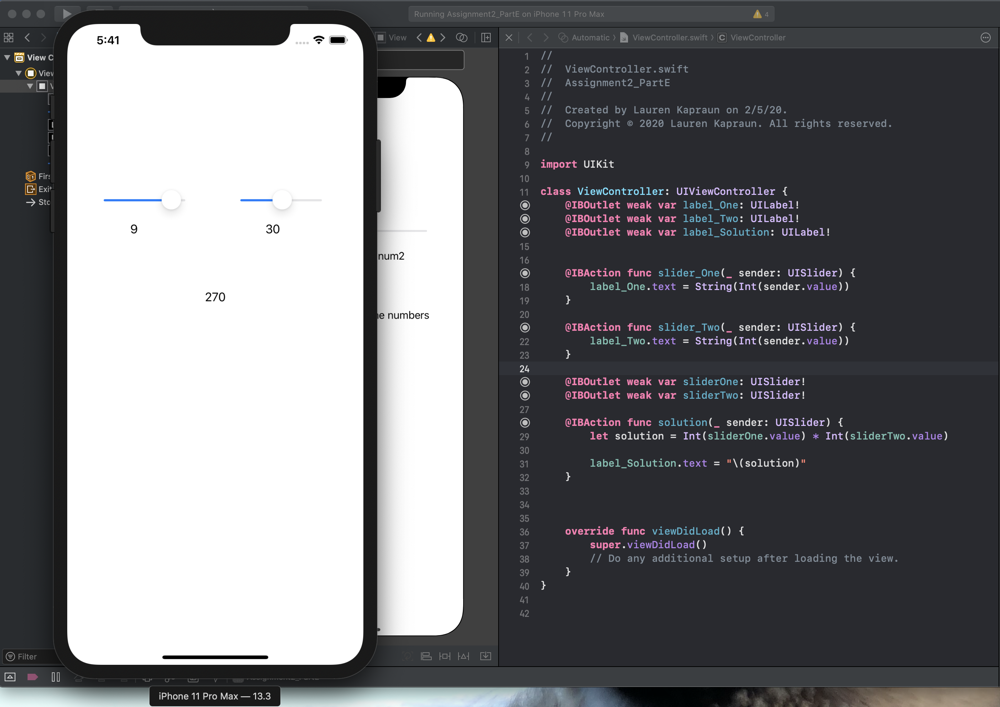

Swift
import UIKit
class ViewController: UIViewController {
@IBOutlet weak var label_One: UILabel!
@IBOutlet weak var label_Two: UILabel!
@IBOutlet weak var label_Solution: UILabel!
@IBAction func slider_One(_ sender: UISlider) {
label_One.text = String(Int(sender.value))
}
@IBAction func slider_Two(_ sender: UISlider) {
label_Two.text = String(Int(sender.value))
}
@IBOutlet weak var sliderOne: UISlider!
@IBOutlet weak var sliderTwo: UISlider!
@IBAction func solution(_ sender: UISlider) {
let solution = Int(sliderOne.value) * Int(sliderTwo.value)
label_Solution.text = "\(solution)"
}
override func viewDidLoad() {
super.viewDidLoad()
// Do any additional setup after loading the view.
}
}
Output
